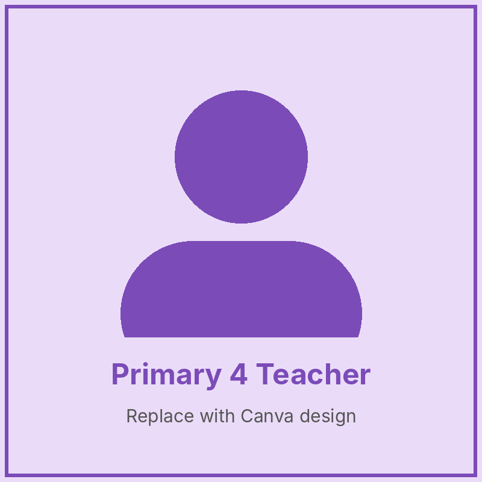
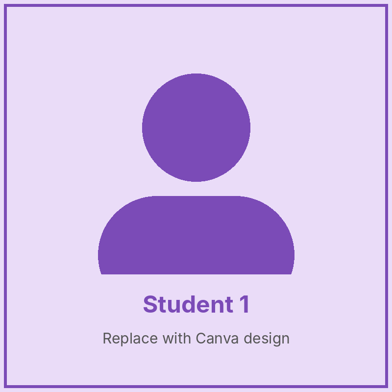
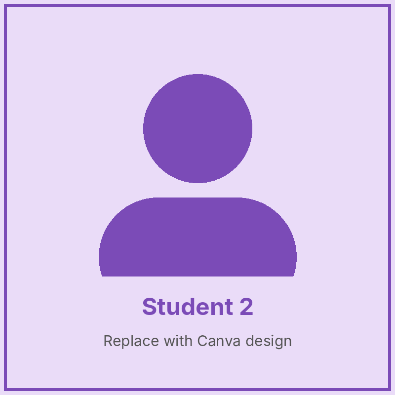
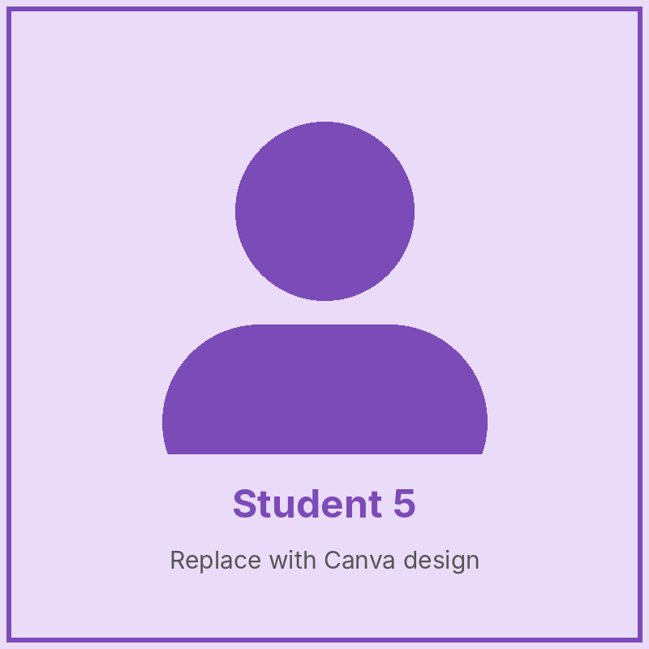
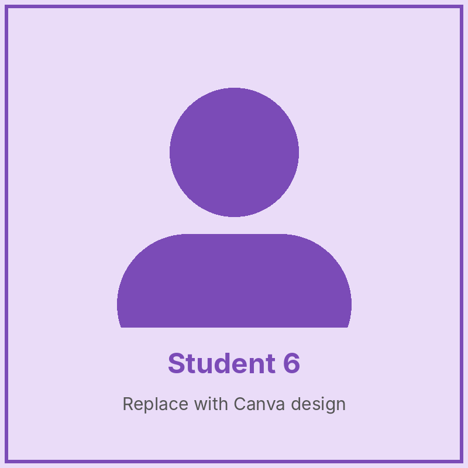

Our Class Teacher

Class Teacher
About the Class
Primary 4 helps pupils become independent learners. They work on projects, read novels, and solve more challenging maths problems. Pupils are encouraged to ask questions, research answers and share ideas with their classmates.
Our Subjects
- English Language – Reading novels, letter writing and parts of speech.
- Mathematics – Large numbers, fractions, decimals, area and perimeter.
- Basic Science & Technology – Matter, the solar system, simple machines.
- Social Studies – Our country's states, resources and transport.
- Computer Studies – Word processing and safe use of the internet.
- French – Greetings, numbers, colours and simple conversations.
Meet Our Pupils



